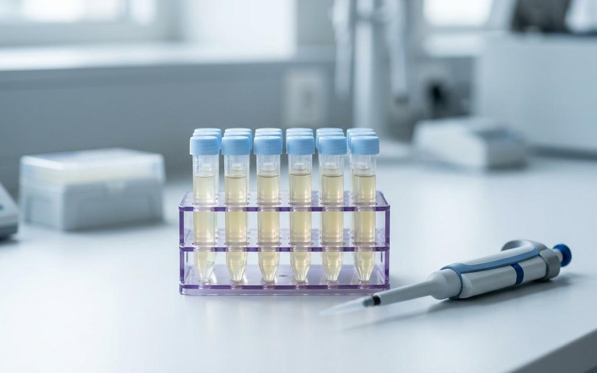
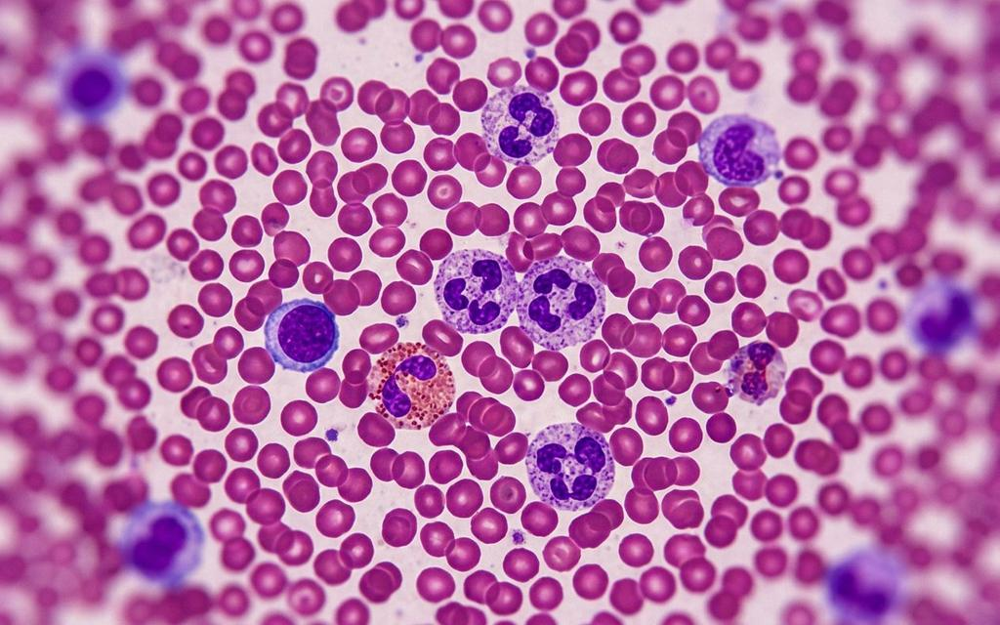

Bonamoussadi, Douala · français et anglaisBonamoussadi, Douala · French and English
Le résultat juste, du premier coup.The right result, first time.
Vous arrivez avec l'ordonnance de votre médecin : nous prélevons, nous analysons, et vous repartez en sachant quand revenir chercher le résultat.You come with your doctor's request: we take the sample, run the test, and you leave knowing when to come back for the result.
BiologisteBiologist Dr Tientcheu Philomène · 696 13 98 19
UNI-LABOExempleExample
- AnalysesTests
- Glycémie · Hémogramme complet (NFS)Glucose · Complete blood count (CBC)
- PréparationPreparation
- À jeun 8 à 12 h, l'eau est permiseFasting 8 to 12 h, water allowed
- MomentTime
- Lundi–vendredi 7h–19h · samedi 7h–13hMonday-Friday 7am-7pm · Saturday 7am-1pm
Le formulaire remplit cette fiche avec vos analyses, et l'envoie sur WhatsApp.The form fills this sheet with your tests and sends it on WhatsApp.
Comment ça se passeHow it works
Quatre étapes, aucune surprise.Four steps, no surprises.
- Vous apportez l'ordonnanceBring the request
Le papier de votre médecin, ou une photo nette si vous l'avez reçue par téléphone. Votre carte de couverture si vous en avez une.Your doctor's paper, or a clear photo if it came by phone. Your cover card if you have one.
- Vous préparez l'analysePrepare the test
Certaines analyses demandent d'être à jeun. La consigne dépend de ce qui est prescrit : la fiche ci-dessous vous la donne.Some tests need fasting. The instruction depends on what is prescribed: the sheet below gives it to you.
- Prélèvement sur placeSample taken on site
Au laboratoire, Carrefour Etoo. Nous vous confirmons le délai au moment du dépôt.At the laboratory, Carrefour Etoo. We confirm the turnaround when you drop off the sample.
- Vous repartez avec le résultatYou leave with the result
Remis au laboratoire, sur présentation du reçu — et expliqué par la biologiste si vous le souhaitez.Handed over at the laboratory on presentation of the receipt, and explained by the biologist if you wish.
Ce que nous dosons.What we run.
Les analyses prescrites par votre médecin, dans quatre domaines. Aucun tarif n'est affiché ici : le prix dépend de l'analyse et du réactif — demandez-le sur WhatsApp, la réponse arrive avant que vous vous déplaciez.The tests your doctor prescribes, across four areas. No prices are shown here: the price depends on the test and the day's reagent: ask on WhatsApp, the answer comes before you travel.

BiochimieBiochemistry
Sucre, cholestérol, rein, foie.Sugar, cholesterol, kidney, liver.
- Glycémie (à jeun et post-prandiale)Glucose (fasting and after meals)
- Cholestérol total, HDL, LDL, triglycéridesTotal cholesterol, HDL, LDL, triglycerides
- Créatinine et urée (fonction rénale)Creatinine and urea (kidney function)
- Transaminases (fonction du foie)Transaminases (liver function)

HématologieHaematology
Le sang, compté et observé cellule par cellule.Blood, counted and observed cell by cell.
- Hémogramme complet (NFS)Complete blood count (CBC)
- Groupe sanguin et rhésusBlood group and rhesus
- Vitesse de sédimentation (VS)Erythrocyte sedimentation rate (ESR)
- Comptage des plaquettesPlatelet count
Sérologie & immunologieSerology & immunology
Infections et inflammation : ce que le corps a rencontré.Infection and inflammation: what the body has met.
- Widal (fièvre typhoïde)Widal (typhoid fever)
- Hépatites B et CHepatitis B and C
- VIH 1 & 2HIV 1 & 2
- CRP (inflammation)CRP (inflammation)
HormonologieHormonology
Thyroïde, fertilité, grossesse, suivi.Thyroid, fertility, pregnancy, follow-up.
- TSH, T3, T4 (thyroïde)TSH, T3, T4 (thyroid)
- Bêta-HCG (grossesse)Beta-HCG (pregnancy)
- FSH et LHFSH and LH
- ProlactineProlactin
Images de démonstration : la photo définitive sera prise dans votre laboratoire.Staged images: the final photograph will be taken in your laboratory.
La préparationPreparation
Une analyse mal préparée, c'est un déplacement pour rien.A badly prepared test means a wasted trip.
C'est la seule chose qui se joue AVANT de venir, et c'est celle qui décide si l'analyse est utilisable. Voici ce que le laboratoire publie, situation par situation.It is the only thing decided BEFORE you come, and it decides whether the test is usable. Here is what the laboratory publishes, situation by situation.
Analyses à jeunFasting tests
Analyses d'urinesUrine tests
Dosages hormonauxHormone tests
Pour un enfantFor a child
Suivi d'un traitementTreatment follow-up
Dans tous les cas : demandez-nous la consigne avant de venir. Une question sur WhatsApp coûte une minute et évite un déplacement pour rien.In every case: ask us before you come. A question on WhatsApp takes a minute and saves you a wasted trip.

Dites-nous ce que vous venez chercher.Tell us what you are coming for.
Cochez vos analyses, écrivez votre nom, choisissez un moment : la fiche se remplit sous vos yeux et part sur WhatsApp déjà rédigée. Rien n'est enregistré sur ce site — c'est votre téléphone qui envoie.Tick your tests, write your name, choose a time: the sheet fills in as you go and leaves on WhatsApp already written. Nothing is stored on this site: your phone sends it.
UNI-LABOà compléterto fill in
- NomName
- —
- AnalysesTests
- —
- PréparationPreparation
- —
- MomentTime
- —
Cochez vos analyses : cette fiche se remplit sous vos yeux, puis part sur WhatsApp.Tick your tests: this sheet fills in as you go, then leaves on WhatsApp.
OùWhere
Rue 5N441, Bonamoussadi (Makepe Bloc L) — repère Carrefour Etoo, DoualaRue 5N441, Bonamoussadi (Makepe Bloc L), landmark Carrefour Etoo, Douala
QuandWhen
Lundi–vendredi 07h–19h · samedi 07h–13hMonday-Friday 7am-7pm · Saturday 7am-1pm
Quoi apporterWhat to bring
L'ordonnance si vous en avez une, et votre carte de couverture si vous en avez une. Une question ? 696 13 98 19Your prescription if you have one, and your cover card if you have one. A question? 696 13 98 19
Où et quand récupérer le résultat.Where and when to collect your result.
Retrait au laboratoireCollection at the laboratory
Sur présentation du reçu remis au dépôt. Le délai dépend de l'analyse : il est confirmé au moment du prélèvement, pour que vous sachiez quand revenir. Si quelqu'un vient à votre place, prévenez-nous : nous dirons ce qu'il doit apporter.On presentation of the receipt given at drop-off. The turnaround depends on the test: it is confirmed when the sample is taken, so you know when to come back. If someone collects it for you, tell us first: we will say what they need to bring.
La biologisteThe biologist
Dr Tientcheu Philomène, biologiste, conduit les analyses et peut vous expliquer un résultat. « Réaliser les analyses biologiques prescrites par un médecin, afin de confirmer ou d'écarter un diagnostic, de traiter une maladie ou de suivre un traitement. » C'est la mission du laboratoire, dans ses propres mots.Dr Tientcheu Philomène, biologist, runs the tests and can explain a result. “To run the biological tests a doctor prescribes, in order to confirm or rule out a diagnosis, to treat an illness, or to follow a treatment.” That is the laboratory's mission, in its own words.
Carrefour Etoo, Bonamoussadi.Carrefour Etoo, Bonamoussadi.
- QuartierQuarter
- Bonamoussadi (Makepe Bloc L), DoualaBonamoussadi (Makepe Bloc L), Douala
- RepèreLandmark
- Carrefour EtooCarrefour Etoo
- RueStreet
- Rue 5N441 · BP 2592 DoualaRue 5N441 · BP 2592 Douala
- HorairesHours
- Lundi–vendredi 07h–19h · Samedi 07h–13hMonday-Friday 7am-7pm · Saturday 7am-1pm
- WhatsAppWhatsApp
- 696 13 98 19
- FixeLandline
- 233 47 00 68
- E-mailE-mail
- u.labo@yahoo.fr
- PaiementPayment
- EspècesCash
- LanguesLanguages
- Français · EnglishFrench · English
Ce qu'on nous demande au guichet, écrit ici.What people ask at the desk, written here.
Faut-il être à jeun ?Do I need to fast?
Pour la glycémie, le cholestérol et les triglycérides : 8 à 12 heures sans manger, l'eau est permise. Pour les autres analyses, ce n'est pas toujours nécessaire — demandez-nous avant de venir. Si votre médecin a donné une consigne précise, c'est elle qui compte.For glucose, cholesterol and triglycerides: 8 to 12 hours without food, water is allowed. For other tests it is not always needed: ask us before coming. If your doctor gave a specific instruction, that one prevails.
Quand venir pour un dosage hormonal ?When should I come for a hormone test?
Souvent le matin, et parfois à un jour précis du cycle. Écrivez-nous le nom de l'analyse : nous vous donnons la date et l'heure exactes — c'est la seule façon d'éviter un déplacement pour rien.Often in the morning, and sometimes on a specific day of the cycle. Message us the name of the test: we give you the exact date and time, the only way to avoid a wasted trip.
Qu'est-ce que j'apporte ?What should I bring?
L'ordonnance de votre médecin (ou sa photo), votre carte de couverture si vous en avez une, et votre ancien résultat s'il s'agit d'un suivi.Your doctor's request (or a photo of it), your cover card if you have one, and your previous result if this is a follow-up.
Combien coûte une analyse ?How much does a test cost?
Le tarif dépend de l'analyse et du réactif utilisé. Envoyez-nous le nom de l'analyse (ou l'ordonnance en photo) sur WhatsApp : nous vous répondons avec le prix avant que vous vous déplaciez.The price depends on the test and the reagent used. Send us the name of the test (or a photo of the request) on WhatsApp: we reply with the price before you travel.
Où se trouve exactement le laboratoire ?Where exactly is the laboratory?
À Bonamoussadi, au carrefour Etoo — Rue 5N441 (Makepe Bloc L), Douala. Le plan ci-dessus montre le carrefour : le laboratoire est indiqué en violet.In Bonamoussadi, at Carrefour Etoo (Rue 5N441, Makepe Bloc L), Douala. The sketch above shows the junction: the laboratory is marked in violet.